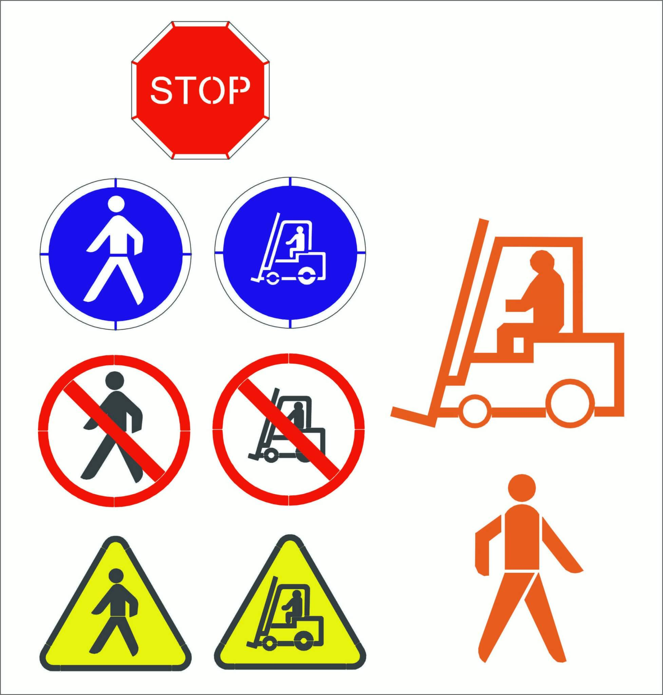

Road and Street Markings
Our services include thin-film and thick-layer markings, custom symbols, and health and safety signs tailored to client specifications. All work complies with relevant EU regulations for safety and visibility.
What is Horizontal Marking?
Horizontal markings involve painting road and information signs directly onto surfaces like asphalt, concrete, or paving stones. Our services include thin-layer and thick-layer markings, anti-slip options, and recessed markings for areas with heavy loads. We use GRACO marking machines to ensure precision and durability.
Our Services
- Painting communication and transport routes
- Pedestrian crossings and health and safety signs
- Parking space markings (including disabled and family spaces)
- Directional and traffic regulation signs
- Anti-slip markings for hazardous areas
- Custom pictograms and evacuation routes
We adapt each project to meet the client’s specific needs, ensuring compliance with safety standards and facility requirements.
Sign Examples
Our portfolio includes custom pictograms and signs such as pedestrian routes, STOP signs, speed limits, and evacuation paths.
Applications of Horizontal Markings
- Warehouses: Improve internal logistics and safety.
- Logistics centers: Designate routes for vehicles and pedestrians.
- Production plants: Mark work zones and evacuation routes.
- Parking areas: Create clear parking and traffic flow markings.
- Sports facilities: Paint lines on tracks, courts, and pitches.
How Do We Make Horizontal Markings?
We tailor our approach to each project, assessing surface type, load requirements, and client needs. Common techniques include:
- Surface markings: Economical and abrasion-resistant, ideal for warehouses and plants.
- Recessed markings: Durable markings for heavy-load areas, such as steel mills.
- Anti-slip markings: Enhanced safety for areas prone to spills and slippery conditions.
Why Choose Us?
- Professional Quality: High precision and regulation compliance.
- Durable Materials: Abrasion-resistant paints and advanced techniques.
- Flexible Scheduling: Minimized disruption with nighttime or weekend work.
- Custom Solutions: Tailored to meet your facility’s unique needs.